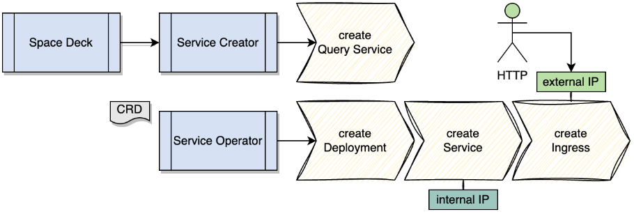

There are several types of Services:
Stateful PU/Service - This is space containing data.
Stateless PU/Service - These are built-in services such as mirror wan-GW, data-GW and custom services
Client Services - These are applications which interact with spaces
It is also possible to develop new services based on Blueprints.
The creation of low-code micro-services is relevant for Smart DIH only. It is recommended to use this method to start stateless services.
Through our SpaceDeck, easy low-code data access micro-services can be created.
| Name | Function |
|---|---|
| Service Creator | RESTful endpoint for deploying, underploying a Query Service |
| Service Operator | Captures the knowledge of deploying and underploying a Query Service |
| Query Service |
Deployment: A stateless application running on a pod with the ability to scale based on the replica count Service: Exposes a single outward-facing endpoint to this application on the cluster (internal network) Ingress: Makes the HTTP (or HTTPS) network service available using protocol aware URIs, for example and external network |
Services creation is managed by a Service Creator operator which uses a service which exposes REST endpoints.
